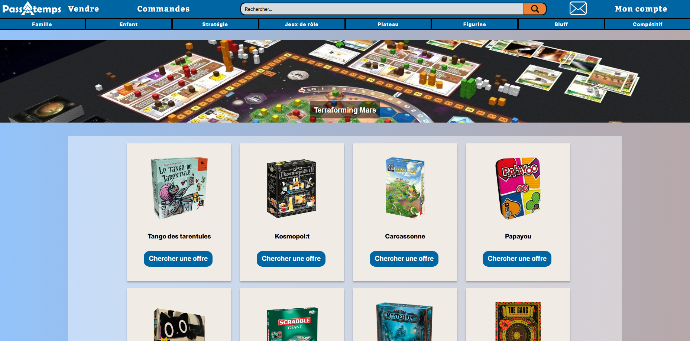

Passatemps
Passatemps était ma première tentative de création de site web. L'objectif était de concevoir un site
web de A à Z, en effectuant toutes les recherches et la réflexion sur les visuels, en réalisant la maquette et bien sûr en
codant le site web lui-même.
Mon groupe et moi avons décidé de poursuivre le projet car l'idée nous
plaisait : un site de vente de jeux de société d'occasion. C'est maintenant un projet en cours que nous
continuerons au cours de notre deuxième année d'informatique. Durant notre première année, nous avons travaillé
sur la gestion de projet, en réfléchissant à chaque aspect et en rédigeant un cahier des charges
fonctionnel afin de préparer le développement.

Première version
Nous sommes encore au tout début du processus, en train de réfléchir à
la structure de la base de données, à la manière dont nous allons gérer nos sprints avec la méthode
Scrum et à l'apprentissage de nouveaux langages de programmation.
Le projet est réalisé avec une architechture MVC à l'aide de PHP et Twig